Why this project
Most people's first real exposure to Kubernetes is a managed service (EKS, AKS, GKE) where the control plane is already running and half the setup is invisible. Building the control plane by hand with kubeadm instead — even just once, on a single node — is what actually explains what a managed service is hiding: an uninitialized node isn't a cluster yet, a cluster with no CNI plugin can't schedule pods, and a control-plane node by default won't run application workloads at all. This project walks through each of those gates in order, rather than skipping past them.
Connecting and verifying prerequisites
This project was completed in a disposable training environment. Some screenshots intentionally retain lab-only values such as a temporary cloud-server public IP, SSH host fingerprint, Kubernetes internal IPs, generated object names/UIDs, and the temporary kubeadm join bootstrap token so the workflow remains visible.
In production documentation, credentials and bootstrap tokens would be redacted, and environment-specific IP addresses, host fingerprints, internal naming, object identifiers, and other operational details would be hidden when they are not required for the procedure.
SSH into the control plane host
Connected to the provisioned host over SSH using the assigned credentials. The first connection attempt prompts to trust the host's SSH key fingerprint — expected for any brand-new machine that's never been connected to before.
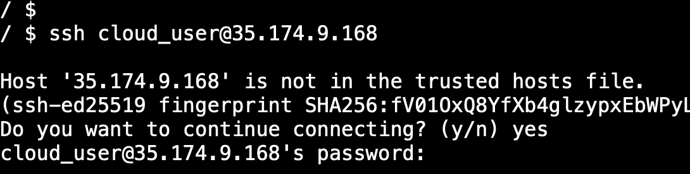
ssh cloud_user@<public-ip> opens a secure remote terminal session on that machine, logged in as cloud_user. Everything typed afterward runs on that remote host, not on the local computer.
Confirm the node's tools are ready
Before touching Kubernetes itself, confirmed the host finished its automated setup and that the core components for this kubeadm-based node were present: kubeadm for bootstrapping the cluster, kubectl for interacting with the API server, kubelet as the node agent, and containerd as the container runtime.
The screenshot also captures a simple command typo: I first entered kubeclt version --client, received command not found, then corrected it to kubectl version --client. I kept that in the project because it reflects the actual troubleshooting flow.
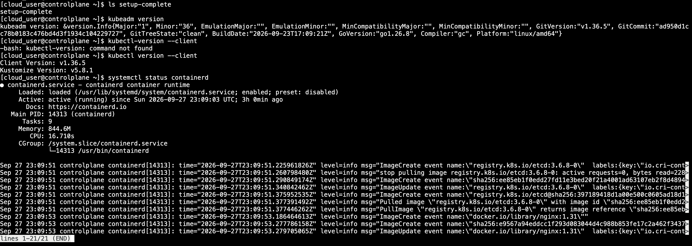
ls setup-complete— just checks that one marker file exists, confirming the host's provisioning script finished running.kubeadm version/kubectl version --client— print the installed version of those command-line tools.kubeletis the node agent used by Kubernetes to run and manage workloads on the node.systemctl status containerd— shows whether the container runtime service isactive (running). If it isn't running, no container on this machine can start, Kubernetes included.
Bootstrapping the control plane
Confirm swap is off, then initialize
For the default kubelet behavior used in this lab, swap is expected to be disabled. An empty swapon --show output confirms that condition before initialization. With swap confirmed off, kubeadm init was run with an explicit pod network range reserved for Flannel, the CNI plugin installed a few steps later.
The screenshot also shows one incorrect sudo password entry followed by Sorry, try again.; the password was then re-entered correctly and the initialization continued.
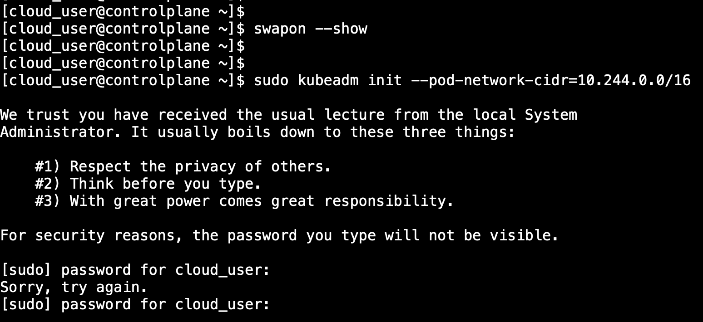
sudo kubeadm init --pod-network-cidr=10.244.0.0/16 sets up everything a control plane needs in one command — the API server, the scheduler, the controller manager, and etcd (the cluster's datastore) — and reserves the 10.244.0.0/16 address range for pods to use later. --pod-network-cidr has to match whatever CNI plugin gets installed afterward; Flannel's default range is exactly this one.
Read the success output carefully
kubeadm init succeeding prints an important block of output: the commands needed to configure kubectl for the current user, plus a ready-to-use kubeadm join command for adding worker nodes. That join command contains a bootstrap token and CA certificate hash, and the token is temporary.
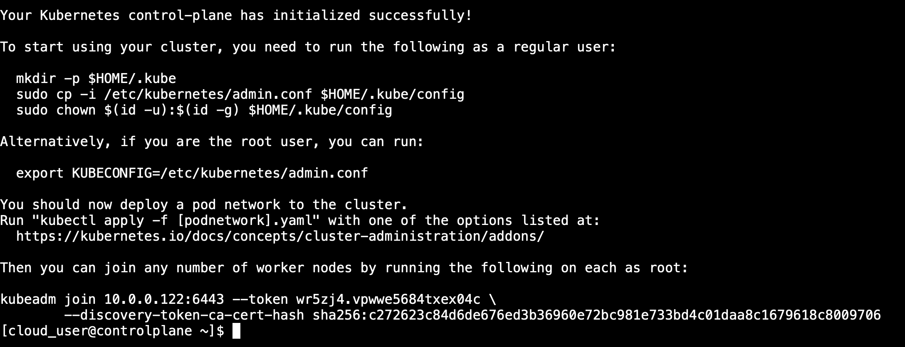
"Your Kubernetes control-plane has initialized successfully" means the API server is up and the cluster technically exists — but it has no worker capacity yet and, as later steps confirm, can't schedule ordinary pods until networking is added. The kubeadm join ... line is the exact command any additional machine would run to become a worker node in this same cluster.
The kubeadm join bootstrap token is a credential and should be redacted from screenshots or shared documentation. The lab screenshot leaves it visible only because this is a disposable training environment.
Set up kubeconfig for the regular user
kubeadm init writes the cluster's admin credentials to a root-only file. Copying that file into the regular user's home directory (and fixing its ownership) is what lets cloud_user run kubectl commands without needing sudo every single time.
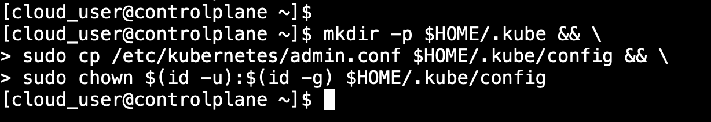
Creates a ~/.kube folder, copies the admin config file into it as config (the default location kubectl looks for), then changes that file's owner from root to the current user so it can actually be read without elevated permissions.
/etc/kubernetes/admin.conf grants highly privileged administrative access. Copying it for the lab user is appropriate for this basic kubeadm exercise, but normal production users should receive credentials and RBAC permissions scoped to the access they actually need.
Confirm kubectl can reach the API server
With kubeconfig in place, kubectl cluster-info is the simplest possible sanity check — it proves the client can actually authenticate to and communicate with the API server, before attempting anything more complex.
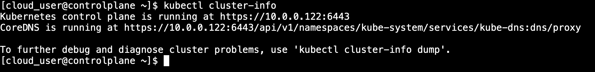
Seeing a URL for "Kubernetes control plane is running at ..." confirms that kubectl can authenticate to and communicate with the API server. A failure here would require checking the kubeconfig, API-server health, certificates/context, and network connectivity rather than assuming a single cause.
Confirming the cluster isn't fully ready yet
Check node and system pod status before networking exists
Deliberately checked cluster health before installing a CNI plugin, specifically to see — and understand — the expected not-ready state, rather than only ever seeing a cluster that already works.
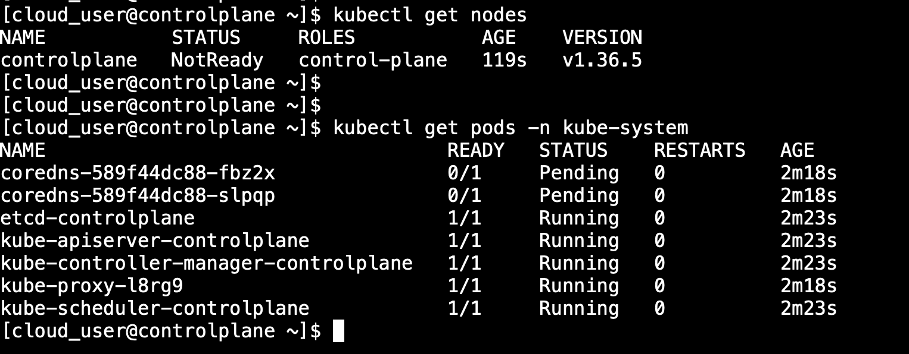
kubectl get nodes showing NotReady and CoreDNS pods stuck Pending both trace back to the same root cause: there's no CNI (Container Network Interface) plugin yet, so the cluster has no way to hand out pod IP addresses. Kubernetes correctly refuses to mark the node ready or schedule pods until that's solved — this isn't a misconfiguration, it's the cluster accurately reporting what's missing.
Installing the CNI plugin and freeing up the node
Apply Flannel, confirm Ready, then remove the control-plane taint
Applying the pre-staged Flannel manifest installs the CNI plugin that was missing in the previous step — and the node flips to Ready almost immediately afterward. But a single-node cluster has one more gate: by default, the control-plane node is tainted to refuse ordinary application pods, since in a real multi-node cluster that taint is what keeps regular workloads off the node running the cluster's own control components. With only one node here, that taint has to be removed or nothing will ever be schedulable.
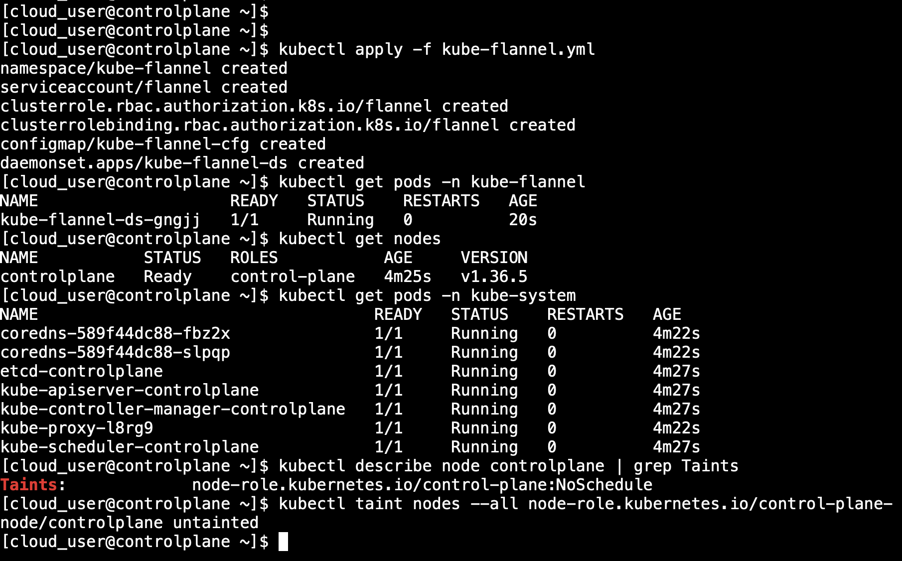
kubectl apply -f kube-flannel.yml— installs Flannel, which hands out the actual pod IP addresses from the10.244.0.0/16range reserved back in step 03.kubectl describe node controlplane | grep Taints— shows thenode-role.kubernetes.io/control-plane:NoScheduletaint, Kubernetes' built-in way of steering regular pods away from a control-plane node.kubectl taint nodes --all node-role.kubernetes.io/control-plane-— the trailing-means "remove this taint," not add it. Without this, no application pod could ever be scheduled on a one-node cluster.
Deploying and scaling a web server
Create an nginx Deployment
With the node ready and schedulable, deployed nginx as a Kubernetes Deployment rather than a bare pod. The Deployment manages a ReplicaSet that maintains the desired number of Pods and supports scaling and rollout behavior, while the kubelet on the node is responsible for running containers and restarting them locally when required.
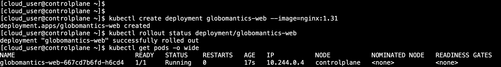
kubectl create deployment globomantics-web --image=nginx:1.31 creates a Deployment with a desired replica count of one. kubectl rollout status reports when the rollout completes, and kubectl get pods -o wide confirms which node the Pod was scheduled on — controlplane, since it is the only node available.
Review what kubectl actually built
The one-line create deployment command results in a much more detailed object underneath — labels, a pod template, rollout strategy, replica counts, generated metadata, and current status. Viewing the full YAML shows Kubernetes' stored API representation of the Deployment, not a minimal hand-written manifest.
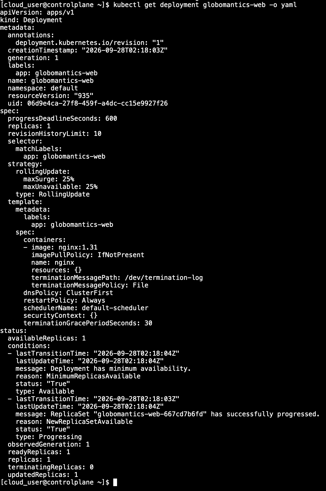
kubectl get deployment globomantics-web -o yaml prints the Deployment's stored API object. The spec.selector and spec.template fields describe which Pods belong to the Deployment and how new Pods should be created, while fields such as uid, resourceVersion, creationTimestamp, and status are generated or maintained by Kubernetes.
Scale to two replicas
Scaling from one pod to two is a single command specifically because a Deployment already tracks a desired replica count — asking for two just changes that number, and Kubernetes' controller does the work of creating the second pod to match it.
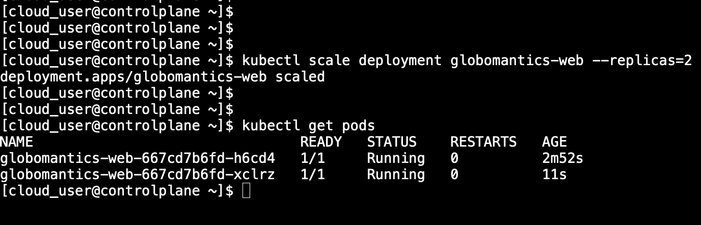
kubectl scale deployment globomantics-web --replicas=2 updates the desired replica count from 1 to 2. kubectl get pods afterward confirms both Pods are Running with READY 1/1, meaning each Pod's single container is currently considered Ready. No custom readinessProbe was configured in this lab.
Exposing the application and verifying access
Create a NodePort service and test via the cluster IP
A Deployment's pods aren't reachable from outside the cluster on their own — a Service is what gives them a stable address. A NodePort service does two things at once: it assigns an internal cluster IP, and it opens a specific port on the node itself that forwards to that service.
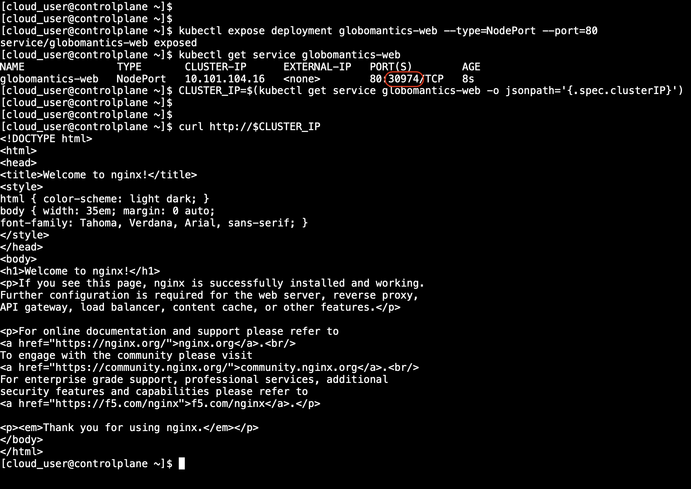
kubectl expose deployment globomantics-web --type=NodePort --port=80— creates the service and opens a random high port (30974 here) on the node that maps to the Deployment's port 80.CLUSTER_IP=$(kubectl get service ... -o jsonpath=...)— grabs just the service's internal IP address into a shell variable, instead of reading it manually off the previous command's output.curl http://$CLUSTER_IP— makes an HTTP request from the cluster node to the Service's internal ClusterIP. Getting back the nginx welcome page confirms the Service can route traffic to the nginx Pods.
Confirm access via the node port too
Testing a second path — localhost plus the node port, rather than the internal ClusterIP — confirms that NodePort forwarding works locally on the Kubernetes node. This does not by itself prove that an external client can reach the service.
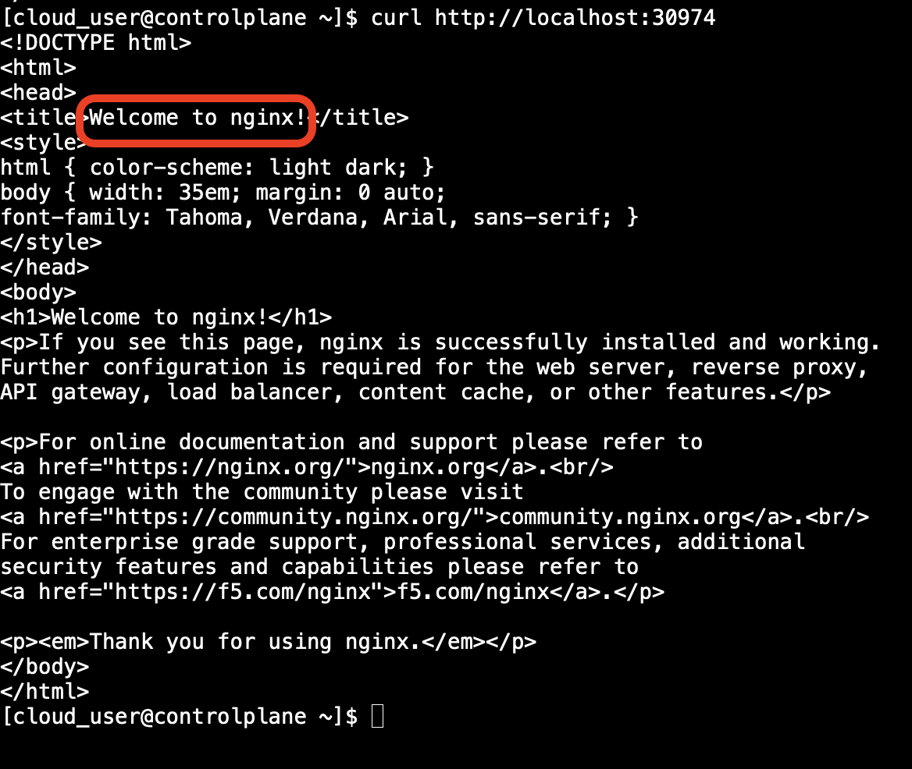
curl http://localhost:30974 returning the same nginx welcome page confirms the local NodePort path works: node port → Service → Pod → nginx. External reachability would require a separate test against a reachable node IP and would also depend on any host firewall, cloud security group, or upstream network rules permitting the NodePort.
Result: a working single-node Kubernetes cluster — control plane initialized, pod networking installed, a scaled two-replica Deployment running, and nginx reachable from the cluster node through both the Service ClusterIP and the local NodePort path.
What this demonstrates
kubeadm initbootstraps the control plane, but the node remainsNotReadyuntil a compatible CNI plugin is installed. In this single-node lab, the control-plane taint also had to be removed before application workloads could be scheduled there.- A Deployment and its ReplicaSet maintain the desired number of Pods and make scaling straightforward, while the kubelet handles container execution and local restarts on the node.
- A NodePort Service provides an internal ClusterIP plus a port on each eligible node. This lab verified both paths locally from the node; proving true external access would require a separate test against a reachable node IP with the necessary network rules in place.
This project was conducted in a controlled sandbox environment. Lab-only identifiers and temporary credentials are shown intentionally for instructional clarity; production documentation would redact credentials, tokens, and environment-specific operational details where appropriate.